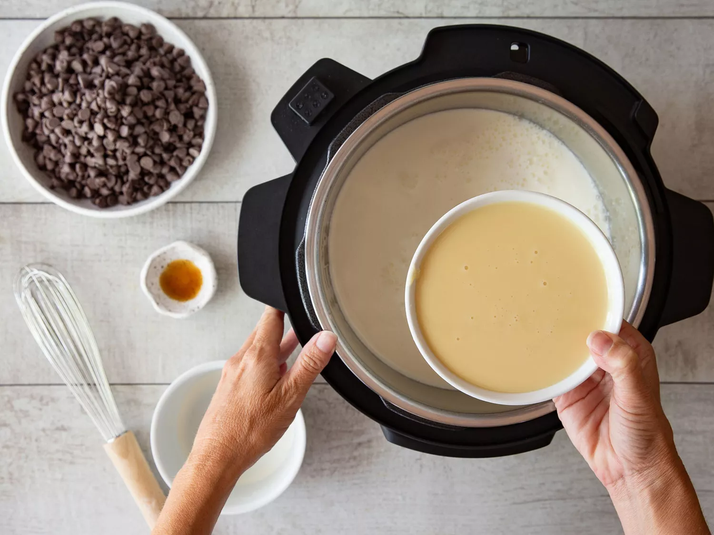
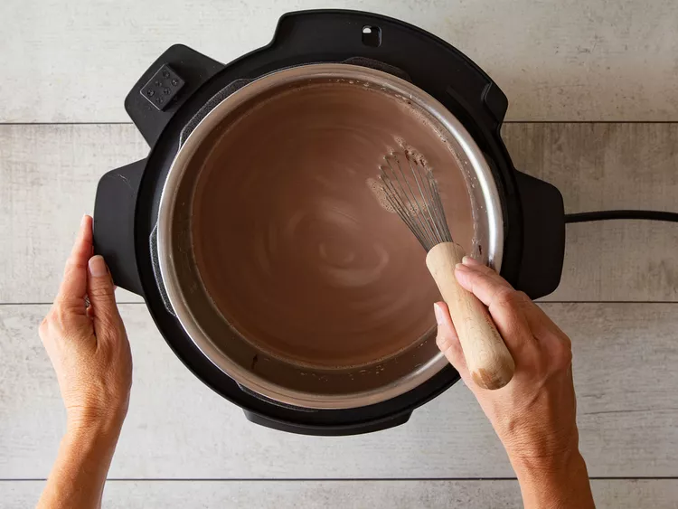

Best Slow Cooker Hot Chocolate
This delicious crockpot hot chocolate is easy to make in the slow cooker.

This easy Crock-Pot hot chocolate is easy to make with just five
ingredients. Trust us: You'll want to bookmark this incredibly cozy slow
cooker hot chocolate recipe ASAP.
Crock-Pot Hot Chocolate Ingredients
Here's what you'll need to make the best slow cooker hot chocolate of your
life:
-
Milk: This easy slow cooker hot chocolate starts with
regular milk (whole or reduced-fat will work best). If you use an
alternative milk, opt for something creamy like oat milk.
-
Chocolate chips: Semisweet chocolate chips create a
perfectly balanced flavor. You could also use milk or dark chocolate
chips.
-
Heavy whipping cream: Heavy whipping cream is the key
to a creamy, decadent, rich slow cooker hot chocolate.
-
Sweetened condensed milk: Like so many decadent
recipes, this hot chocolate calls for a can of sweetened condensed milk.
-
Vanilla: A teaspoon of vanilla extract lends complexity
and takes the overall flavor up a notch.
Ingredients
- 6 cups milk
- 2 cups semisweet chocolate chips
- 1 ½ cups heavy whipping cream
- 1 (14 ounce) can sweetened condensed milk
- 1 teaspoon vanilla extract
Direction
Step 1
Combine milk, chocolate chips, cream, condensed milk, and vanilla in a
slow cooker.

Step 2
Cover and cook on Low, stirring occasionally, until chocolate chips are
melted and mixture is smooth, about 2 hours.
